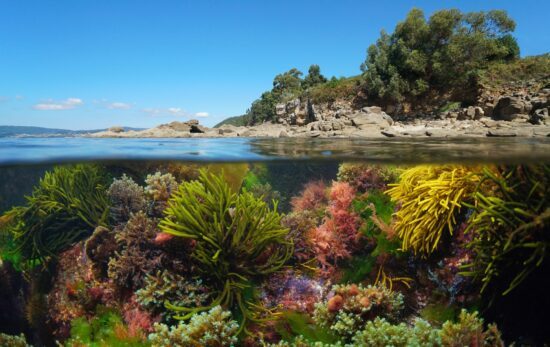
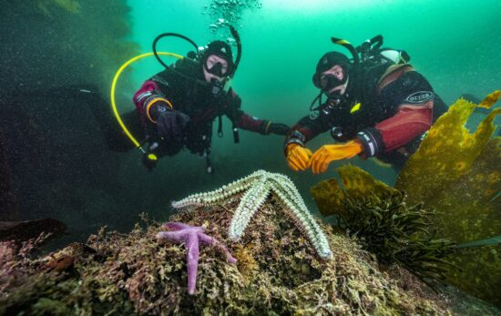
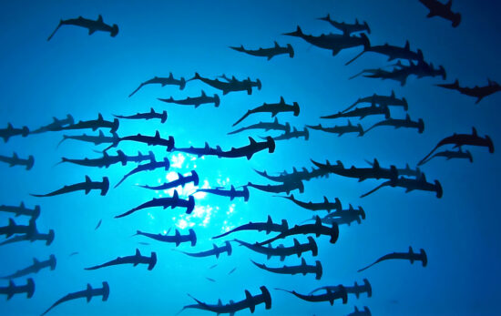
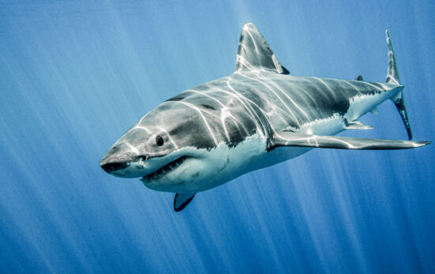
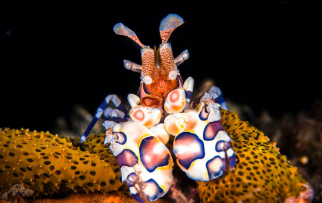
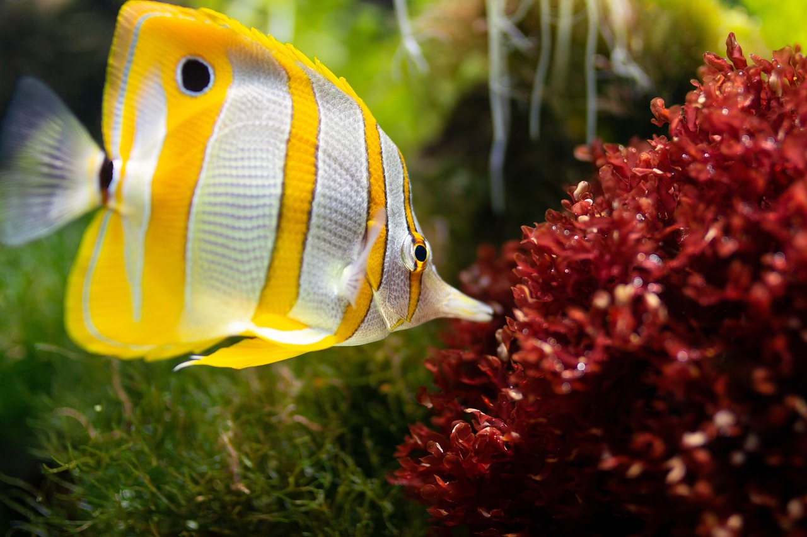

SCROLL DOWN
SCROLL DOWN
본문콘텐츠영역
marine life
Under Ocean
Learn about underwater creatures you can encounter when you dive


- The Best Shark Gifts for Fans of Our Toothy Friends
- If you know someone who loves sharks as much as we do, why not surprise them with shark gifts this holiday season?

- Ocean Plants — And Why They're So Important
- From single-celled algae to towering kelp forests, learn about the different types of ocean plants and why they're crucial to life on Earth.

- Responsible Shark and Ray Tourism: A Guide to Best Practice
- Are you interested in swimming with sharks or rays? Before you go, be sure to read up on the proper protocol for shark and ray tourism!

- The 14 Best Marine Life Encounters Around the World
- From close-up shark sightings to impressive courtship displays, here are 14 of the best marine life encounters and where to find them.

- 15 Marine Species to Encounter Around the UK Coast
- The marine species in the UK are varied, magnificent and colorful. Here are 15 species to look out for around the UK coast.

- Hammerhead Shark Conservation: What You Need to Be AWARE of
- Are hammerhead sharks endangered? Learn about hammerhead shark conservation and how you can help!

- Great White Shark Conservation: What Most People Don't Know
- Are great white sharks endangered? Read on to learn some facts about great white shark conservation most people don't know!

- Underwater Animals That Look Alike
- Did you know there are nearly 250,000 recorded marine species? Here's how you can identify some common underwater animals that look alike.

- The Real Superhero Animals of the Ocean
- These four marine animals play important roles in protecting their homes. Learn what makes an ocean animal a real Ocean Superhero
Gallery


